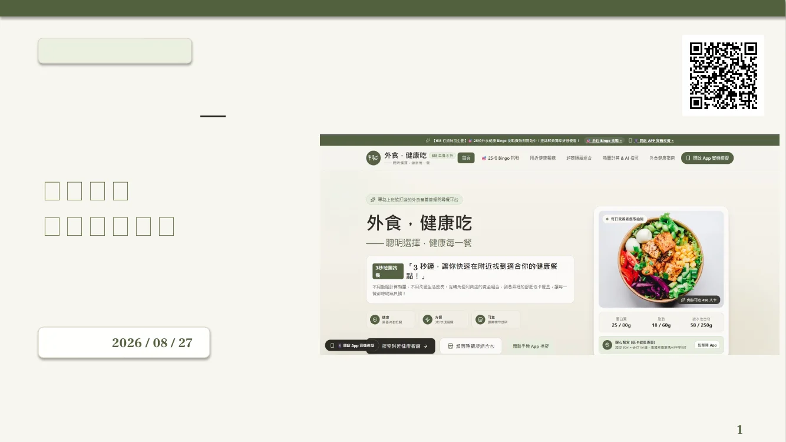

Featured project · Marketing strategy
外食・健康吃
把「健康管理操作成本太高」轉化為一套可開始、可回饋、可持續的產品體驗行銷提案。

Problem
使用者知道要健康，卻很難持續。找餐、判斷營養與紀錄的操作成本，讓健康管理容易中斷。
產品功能解決一次選擇，活動機制處理持續使用
概念平台以地圖找餐、AI 拍照辨識、一鍵紀錄與健康指南降低操作門檻。行銷提案進一步用 30 天 Bingo 將核心功能拆成可完成的任務。
第一階段只需完成任一條線，以降低開始門檻；進階階段再以 7–14 天連續任務、徽章與獎勵測試留存。
Customer journey
每個接觸點都服務同一條旅程
01曝光導流
短影音／KOL／社群
短影音／KOL／社群
02流量導入
Landing Page CTA
Landing Page CTA
03首次體驗
任一條線 Bingo
任一條線 Bingo
04回饋蒐集
微互動問卷
微互動問卷
05持續留存
14 天進階挑戰
14 天進階挑戰
06口碑擴散
徽章與分享
徽章與分享
KPI design
參與人數與資料量分開。2,000 筆回答不等於 2,000 位使用者；提案把行為與回饋定義拆開。
從 Activation 追到 Retention
- Bingo 參與人數
- 實際開始挑戰的獨立使用者
- 任務完成數
- 所有使用者完成的格數總和
- Bingo 完成率
- 至少完成一條線的使用者比例
- 有效微問卷數
- 符合分析條件的功能回饋
- 核心功能使用率
- 實際使用地圖、AI 等功能比例
- 7 日留存率
- 第 7 日仍回到平台的使用者比例
Proposal, not measured outcome
簡報中的「首月有效回收超過 2,000 筆」是目標，不是已達成結果。本作品展示策略與 KPI 設計，不宣稱已上線或完成成效驗證。